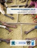

Home / Issues / UN/Business Partnerships / Guidance Material
The United Nations and the Private Sector: A Framework for Collaboration |
|
 |
A framework outlining different ways in which the private sector can collaborate with UN agencies, funds and programmes to address global challenges. Specifically, it describes how business can make an effective contribution through their core business operations, through social investments and philanthropy, and through advocacy, policy dialogue and institutional frameworks. |
Enhancing Partnership Value: The Partnership Assessment Tool (PAT) |
|
|  |
A tool for companies and the UN to assess the impact and sustainability of partnerships for development, jointly developed by the Global Compact, UNDP, UNITAR and the UN Office for Partnerships (UNDP, UNITAR, UNOP, GCO 2007) |
Joining Forces for Change - Innovation and Impact in UN-Business Partnerships |
|
|
Profiles how companies from a variety of industries have partnered with different United Nations Agencies, Funds and Programmes to help address significant global issues. The guide illustrates how different types of UN-Business partnerships can contribute to development objectives, and shows the win-win potential of collaboration (GCO 2007). |
|
| >>
Please click here to
download the publication
|
|
Business Guide to Partnering with NGOs and the United Nations |
|

|
Developed in collaboration with Dalberg Global Development Advisors, this guide identifies leading NGOs and UN entities from around the world that have demonstrated skill and excellence in partnering with companies. It aims to better equip companies to survey the NGO and UN landscape to match their needs and competences with those of potential partners (GCO 2007) |
| >> Contact
globalcompact@un.org for a copy of the guide.
|
|
Business UNusual: Facilitating United Nations Reform Through Partnerships |
|

|
Partnerships have an increasingly important role to play as a complementary approach to the conventional instruments of international cooperation and development. "Business UNusual" explores how partnerships with business act as a catalyst for reform and innovation throughout the UN organization (GCO 2005). |
| >> Click here to download Part 1 and Part 2 of the publication. | |